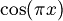
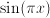
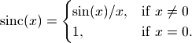
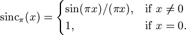
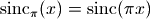

Trigonometric functions¶
Degree-radian conversion (degrees(), radians())¶
- mpmath.functions.degrees(x)¶
Converts the radian angle
 to a degree angle:
to a degree angle:>>> from mpmath import * >>> mp.dps = 15 >>> print degrees(pi/3) 60.0
- mpmath.functions.radians(x)¶
Converts the degree angle
to radians:>>> from mpmath import * >>> mp.dps = 15 >>> print radians(60) 1.0471975511966
Trigonometric functions (cos(), sin(), tan(), sec(), csc(), cot())¶
- mpmath.functions.cos(x, **kwargs)¶
- Returns the cosine of x
- mpmath.functions.sin(x, **kwargs)¶
- Returns the sine of x
- mpmath.functions.tan(x, **kwargs)¶
- Returns the tangent of x
- mpmath.functions.sec(x)¶
- Returns the secant of x, 1/cos(x)
- mpmath.functions.csc(x)¶
- Returns the cosecant of x, 1/sin(x)
- mpmath.functions.cot(x)¶
- Returns the cotangent of x, 1/tan(x)
Trigonometric functions with modified argument (cospi(), sinpi())¶
- mpmath.functions.cospi(x, **kwargs)¶
Computes , more accurately than the expression cos(pi*x):
>>> from mpmath import * >>> mp.dps = 15 >>> print cospi(10**10), cos(pi*(10**10)) 1.0 0.999999999997493 >>> print cospi(10**10+0.5), cos(pi*(10**10+0.5)) 0.0 1.59960492420134e-6
- mpmath.functions.sinpi(x, **kwargs)¶
Computes , more accurately than the expression sin(pi*x):
>>> from mpmath import * >>> mp.dps = 15 >>> print sinpi(10**10), sin(pi*(10**10)) 0.0 -2.23936276195592e-6 >>> print sinpi(10**10+0.5), sin(pi*(10**10+0.5)) 1.0 0.999999999998721
Inverse trigonometric functions (acos(), asin(), atan(), asec(), acsc(), acot())¶
- mpmath.functions.acos(x, **kwargs)¶
- Returns the inverse cosine of x
- mpmath.functions.asin(x, **kwargs)¶
- Returns the inverse sine of x
- mpmath.functions.atan(x, **kwargs)¶
- Returns the inverse tangent of x
- mpmath.functions.asec(x)¶
- Returns the inverse secant of x, acos(1/x)
- mpmath.functions.acsc(x)¶
- Returns the inverse cosecant of x, asin(1/x)
- mpmath.functions.acot(x)¶
- Returns the inverse cotangent of x, atan(1/x)
Sinc function (sinc(), sincpi())¶
- mpmath.functions.sinc(*args, **kwargs)¶
sinc(x) computes the unnormalized sinc function, defined as

See sincpi() for the normalized sinc function.
Simple values and limits include:
>>> from mpmath import * >>> mp.dps = 15 >>> print sinc(0) 1.0 >>> print sinc(1) 0.841470984807897 >>> print sinc(inf) 0.0
The integral of the sinc function is the sine integral Si:
>>> print quad(sinc, [0, 1]) 0.946083070367183 >>> print si(1) 0.946083070367183
- mpmath.functions.sincpi(*args, **kwargs)¶
sincpi(x) computes the normalized sinc function, defined as

Equivalently, we have .
The normalization entails that the function integrates to unity over the entire real line:
>>> from mpmath import * >>> mp.dps = 15 >>> print quadosc(sincpi, [-inf, inf], period=2.0) 1.0
Like, sinpi(), sincpi() is evaluated accurately at its roots:
>>> print sincpi(10) 0.0